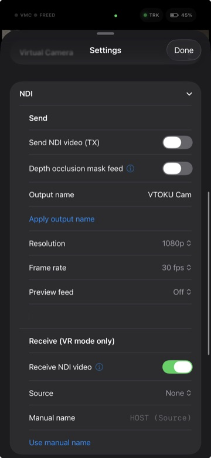

NDI® lets VTOKU Cam exchange video over your local network with no capture card. Send the composited AR view to your switcher or recorder, and bring other NDI sources back into the app as an overlay.

Send your AR feed over NDI
- Enable NDI Send in the app.
- VTOKU Cam appears as an NDI source on your network, named after the device.
- Select it as a source in your NDI-capable software (OBS with the NDI plugin, a TriCaster, vMix, a Warudo NDI input, etc.).
Receive an NDI source
- Enable NDI Receive.
- Pick a discovered source from the list to bring it in as an overlay.
Receive shows in VR mode only. The received feed appears when you switch to VR mode. In AR mode ingest stops automatically so it uses no bandwidth. Turn NDI Receive off to never receive.
Send a mask over NDI
To key the avatar onto another background in your compositor, send a matte alongside the main feed. VTOKU Cam appears as a second NDI source named "[device] Mask" that you apply as alpha or a luma key on the paired feed. Set it up in Settings › Graphics › Masking:
- Mask contents, choose Occlusion mask (real-world depth for keying) or Avatar + shadow matte (the avatar and her ground shadow only).
- Depth source (for the occlusion mask), LiDAR (realtime) or Neural (still camera) for crisper edges when the camera holds still.
- Send mask over NDI, turn it on to publish the second source. Requires a LiDAR-capable device and a placed anchor.
See Occlusion and masking for how the depth modes work.
NDI|HX output requires Pro. Standard NDI send and receive are free. The more bandwidth-efficient NDI|HX (HEVC) output is unlocked by the one-time Pro purchase, which also covers commercial use.
Networking notes
- NDI discovery uses mDNS/multicast, keep both ends on the same subnet.
- Wired or 5 GHz Wi-Fi is strongly recommended for full-rate video.
- If discovery is blocked, some tools let you add a source manually by host name.
Trademark: NDI® is a registered trademark of Vizrt NDI AB. VTOKU Cam uses the NDI® SDK under license; see Acknowledgements.
Next: Avatars & faces →